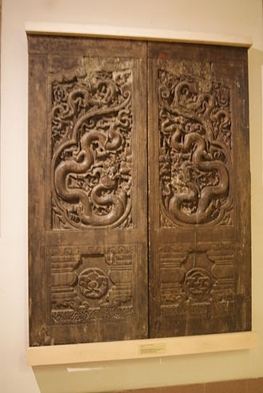

Tháp Phổ Minh (Chùa Tháp / Chùa Phổ Minh)
Chùa Phổ Minh (Phổ Minh tự 普明寺) hay chùa Tháp là một ngôi chùa ở thôn Tức Mạc, nằm cách thành phố Nam Định khoảng 5 km về phía bắc. Năm 2012, di tích lịch sử và kiến trúc nghệ thuật đền Trần và chùa Phổ Minh được xếp hạng di tích quốc gia đặc biệt.
Lịch sử
Theo biên niên sử, chùa được xây dựng vào năm 1262, ở phía tây cung Trùng Quang của các vua nhà Trần. Nhưng theo các minh văn trên bia, trên chuông thì ngôi chùa này đã có từ thời nhà Lý. Có thể chùa đã được xây dựng lại với quy mô rộng lớn từ năm 1262. Tuy đã nhiều lần tu bổ nhưng chùa vẫn còn giữ được nhiều dấu tích nghệ thuật đời Trần.
Kiến trúc
Cụm kiến trúc chính của chùa bao gồm 9 gian tiền đường, 3 gian thiêu hương, toà thượng điện cũng 3 gian nhưng rộng hơn, xếp theo hình chữ "công". Bộ cửa gian giữa nhà tiền đường gồm 4 cánh bằng gỗ lim, to dày, chạm rồng, sóng nước, hoa lá và văn hoa hình học. Hai cánh ở giữa chạm đôi rồng lớn chầu Mặt Trời trong khuôn hình lá đề, được coi là một tác phẩm điêu khắc khá hoàn mỹ. Cũng như đôi sấu đá trên thành bậc tam quan và đôi rồng trên thành bậc gian giữa tiền đường, bộ cánh cửa này còn giữ được những dấu ấn của nghệ thuật chạm khắc đời Trần. Một số công trình kiến trúc bài trí khác đã làm tô thêm vẻ đẹp của chùa Phổ Minh, như 3 gian tam quan khung gỗ, tường gạch, mái ngói rêu phong, cổ kính với bức hoành phong đề 4 chữ lớn. "Đại hùng bảo điện" và thành bậc thềm ở chính giữa có chạm đôi sấu đá rất sống động, hai hồ tròn thả sen nằm đăng đối hai bên lối đi dẫn vào chùa. Trong chùa có bày tượng Trần Nhân Tông nhập Niết bàn (tượng nằm); tượng Trúc Lâm Tam tổ dưới bóng cây trúc; một số tượng Phật đẹp lộng lẫy. Chuông lớn của chùa có khắc bản văn "Phổ Minh đỉnh tự" đúc năm 1796 - chùa vốn có một vạc lớn, sử sách coi là một trong bốn vật báu của Việt Nam (An Nam tứ đại khí) nhưng nay không còn. Sau thượng điện, cách một sân hẹp là ngôi nhà dài 11 gian. Ở giữa là 5 gian nhà tổ, bên trái là 3 gian nhà tăng và bên phải là 3 gian điện thờ. Hai dãy hành lang nối tiền đường ở phía trước với ngôi nhà 11 gian ở phía sau làm thành một khung vuông bao quanh kiến trúc chùa.
Tháp Phổ Minh
Kiến trúc thời nhà Trần được bảo tồn khá nguyên vẹn ở đây là tháp Phổ Minh, dựng năm 1305. Tháp cao khoảng 20 m, gồm 14 tầng. Nền tháp và tầng thứ nhất xây bằng đá, những tầng còn lại phía trên xây bằng gạch. Tầng nào cũng trổ 4 cửa vòm cuốn, giữa các tầng là gờ mái... Tầng tháp thứ nhất đặt trên bệ đá, có hai lớp cánh sen, lớp dưới chúc xuống, lớp trên ngửa lên đỡ lấy tháp hình vuông, mỗi cạnh rộng hơn 5 mét. Bệ và tầng thứ nhất có những hình chạm nông trên mặt đá như hoa lá, sóng nước, mây cuốn, đặc trưng cho phong cách trang trí thời nhà Trần. Mặt ngoài những viên gạch các tầng trên được trang trí hình rồng.